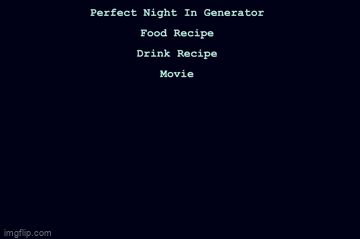
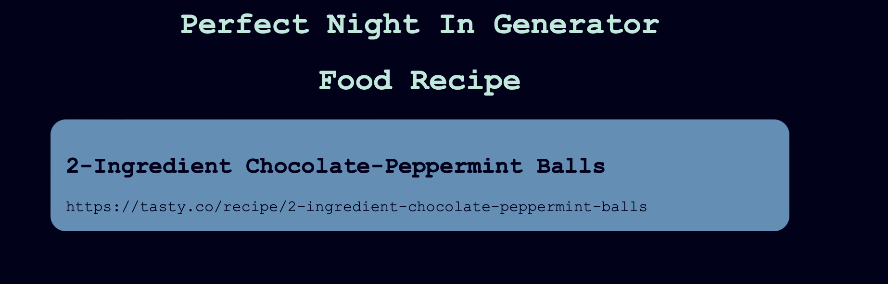

Prototype
Perfect Night In Generator Prototype
Overview
The goal for this project was to use API's to create a perfect night in. I wanted to curate a drink, snack/meal, and
movie for the user based on their preferences. My prototype's goal is to randomly retrieve these things with hard-coded
requests. Right now the site is using chocolate as the ingredient to be incorporated, vodka as the alcohol, and the movie
genre is drama. I was hoping to get this basic API call working before I accept input.

Project Scope
My project scope has stayed pretty similar now that i have began working on it. I was hoping to maybe
have the recipes printed out on the page originally but after seeing the large range of formats they can
come in, I have decided to just provide a link instead.
Time Management
The prototype took me right around the time I thought it would. It was very helpful to start it early on
Monday and get my bearings with APIs. Also, starting on Monday meant I could go to Hannah's office hours with initial
questions that would have kept me from getting any further on the project. I expect the final iteration to
be a similar time commitment.
Implementation Plan
My implementation plan has stayed the same. I plan to continue with figuring out how to get input values
from the user and use those to call the API. I need to figure out how to make drop-down menus and how
to use that information wit the API. I also expect that I will have to deal with errors from input so
I also need to brainstorm how I plan on handling that.
Development
My first step in development was to clone the example API project to get a base for my site going. Then, I researched the Apis
that I needed to use. I used rapidapi to find lots of them because they had really great documentation for each one. After I found
the Tasty API, the Cocktail DB, and the Online Movie DB, I went into Visual studio to figure out how to work with them.
I decided to make 3 seperate js files to use all of them and then called each in my html. I ran into a problem with the calling
of the information in the json, but I will get into that in the Issue Deep Dive. Once I figured out how to get the information I
needed from the json, I sent back the information with "render." For the snack I sent the name of the recipe and a link, for the
cocktail I also sent the name of the recipe and a link, and for the movie I sent the name of the movie and the year. Once I got
the hang of working with one API, the rest were a lot easier and I successfully got my site to show a randomized Perfect Night In
with hardcoded input for now.

Issue
The main issue I had was retrieving the values that were inside the json dictionary. I remembered doing it in 310, but I wasn't
sure how to do it in js and was getting confused between the array and the dictionary. I was able to hop on to office hours with Hannah
where she helped me get the information which uses periods in between the categories you want to get into. I was also having trouble
sending the information back to my html, but she helped me with the render function. Everything thus far has gone suprisingly
smoothly, and I don't doubt I will have issues coming up as I complete this project.
Ideas and Future
- Add section to recieve input from the user
- Make the css different from Hannah's and more catered to my site
- Make the links in the boxes clickable to the recipes
Kudos
Shout out to to rapid API for having great documentation on each API and how to sign up for them. Also shout out Hannah for
helping me on js basics that I haven't grasped yet.